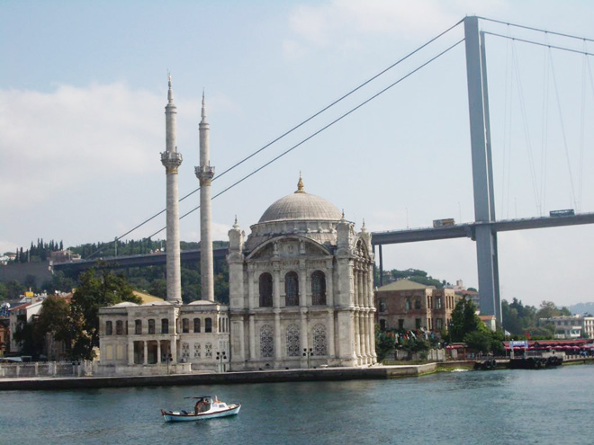
.
A boat trip north up the Bosphorus first took us past the Ortaköy Mosque which is perched on the waterfront right beneath the Bosphorus Suspension Bridge. It was built in 1855 by Nikogos Balyan, who was also responsible for the Dolmabahçe Palace (see below).
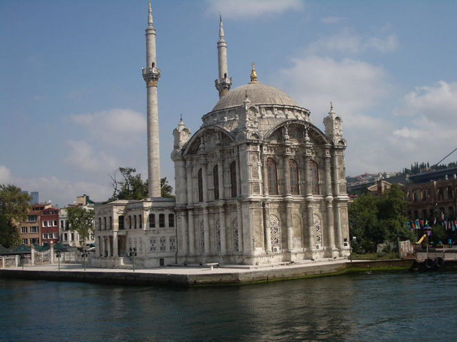
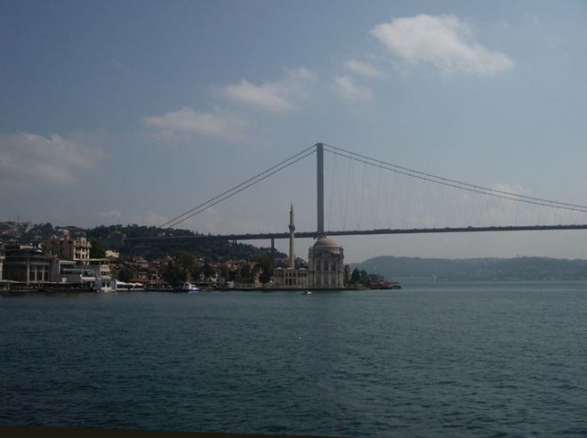
A comfortable and pleasant mode of transport from which we could see the sights and the locals having a swim.
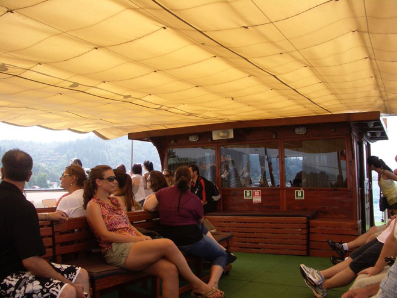
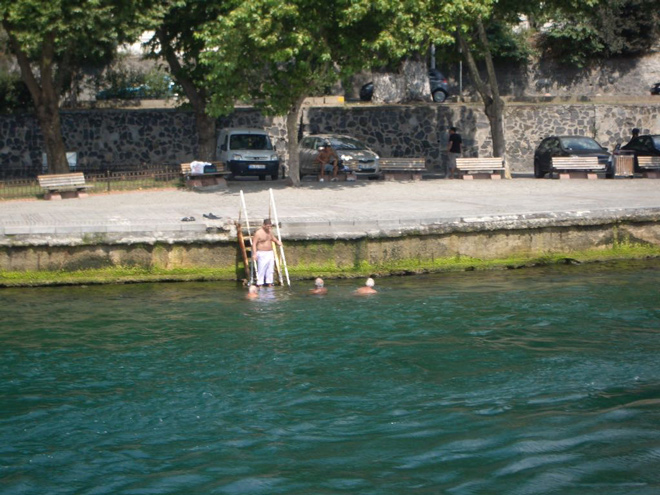
The Fortress of Europe was built by Mehmet the Conqueror in 1452 as his first step in the conquest of Constantinople. Situated at the narrowest point of the Bosphorus, the fortress controlled a major Byzantine supply route. It was later used as a prison, particularly for out-of-favour foreign envoys and prisoners-of-war. The structure was restored in 1953.
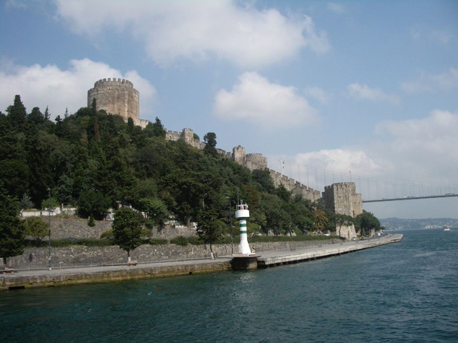
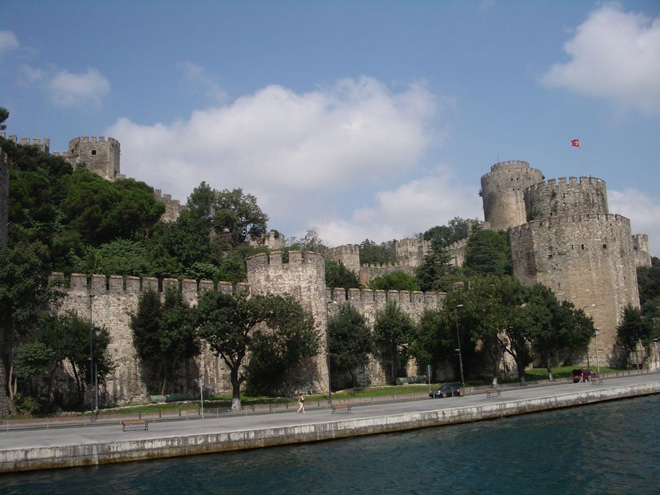
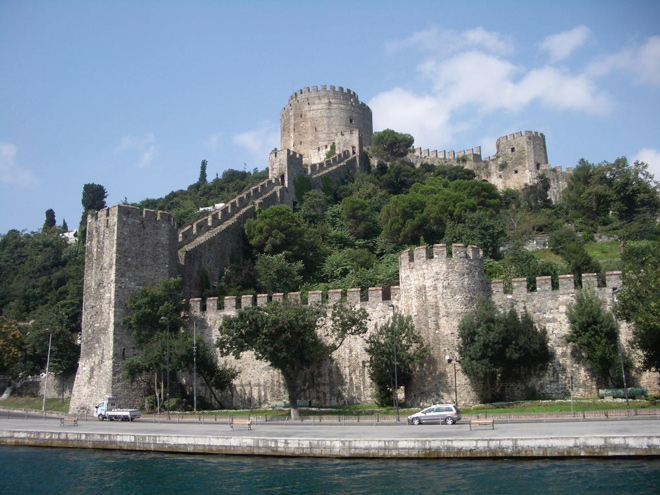
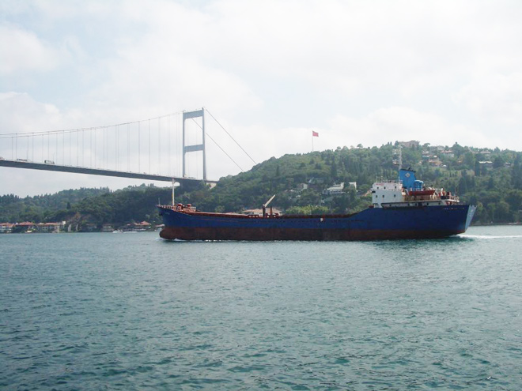
From the boat we saw the Dolmabahçe Palace which was built in 1856 by Karabet Balyan and his son Nikogos, members of the great family of Armenian architects who lined the Bosphorus with many of their creations in the 19th century.
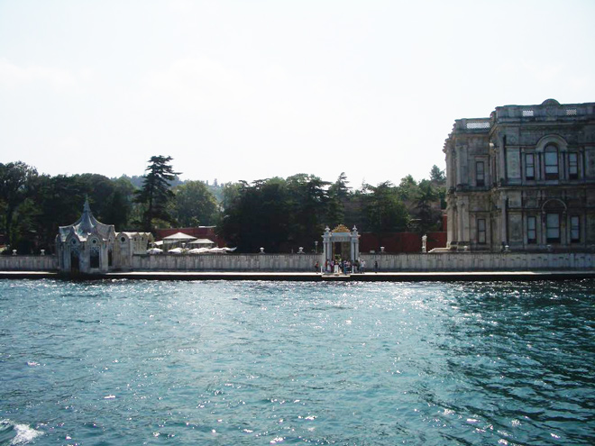
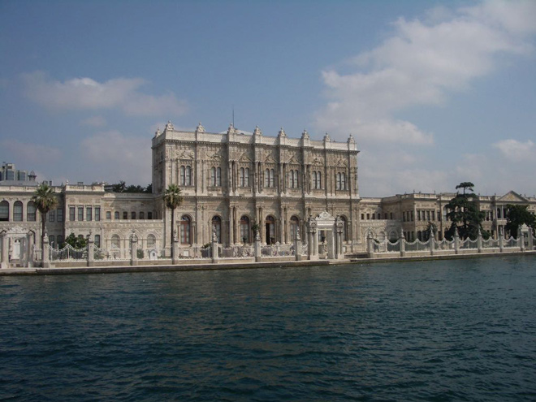
No boats are allowed to land at the Dolmabahçe Palace, so we had to return to our jetty where we disembarked and were then taken by coach to visit the Palace.
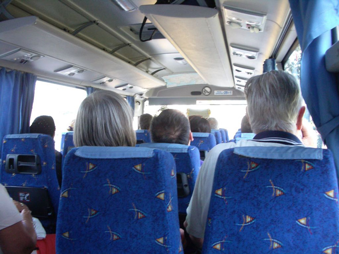
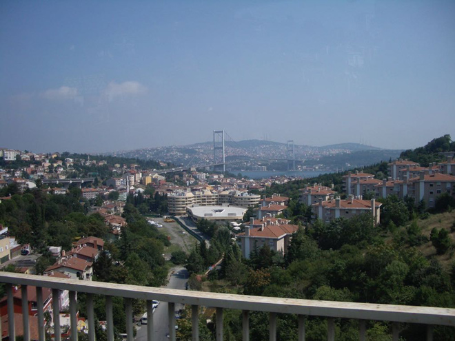
We were now travelling over the bridge we had previously sailed beneath.
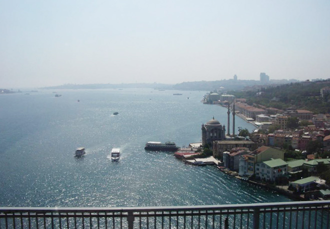
The extravagant opulence of the Dolmabahçe Palace belies the fact that it was built when the Ottoman Empire was in decline. The Sultan financed his great palace with loans from foreign banks.
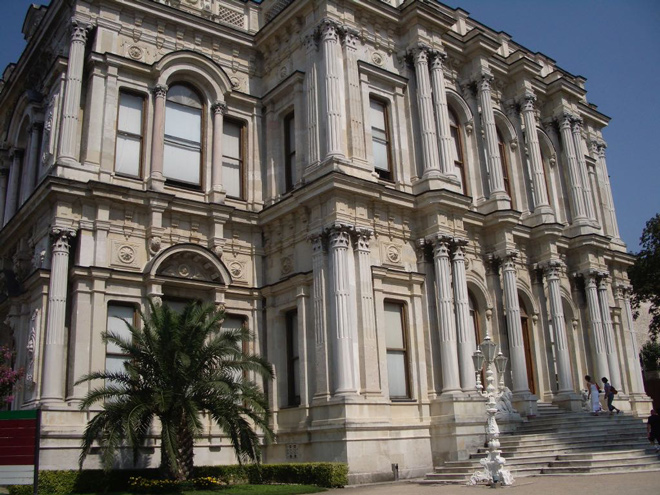
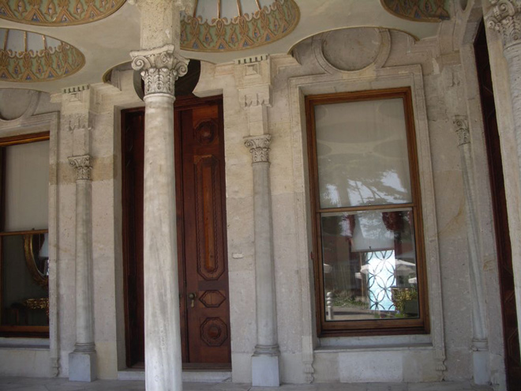
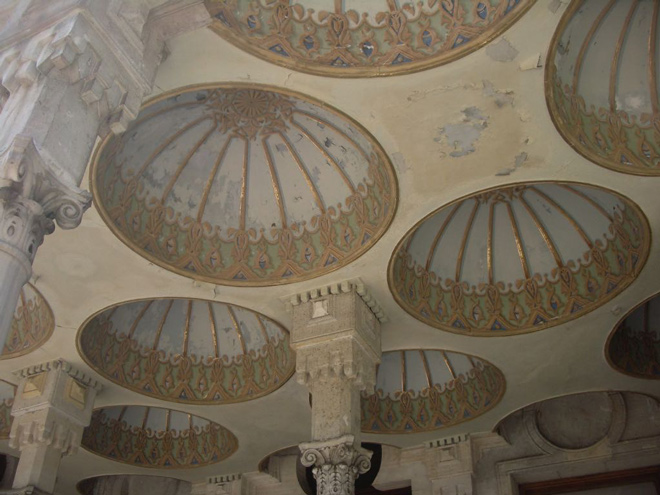
The Ceremonial Hall is a magnificent domed structure which was designed to hold 2,500 people. Its chandelier, reputedly the heaviest in the world, was bought in England.
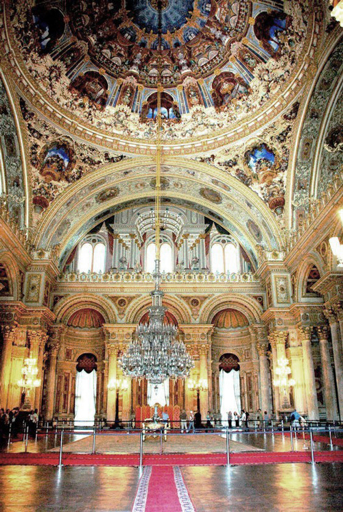
The apparent fragility of the Crystal Staircase stunned observers when it was built. In the shape of a double horseshoe, it is made from Baccarat crystal and brass, and has a polished mahogany rail.
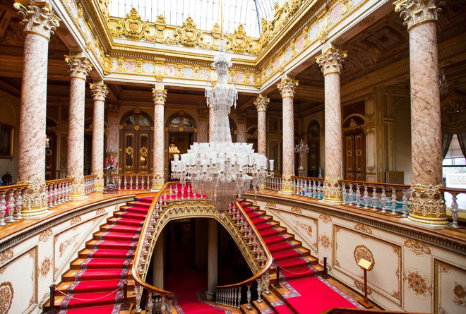
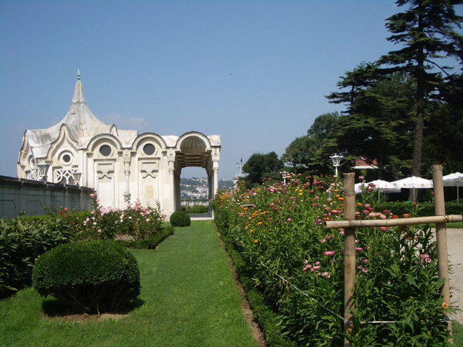
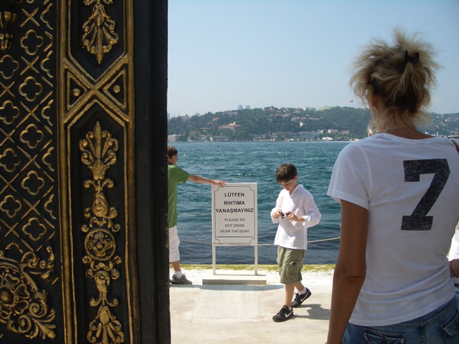
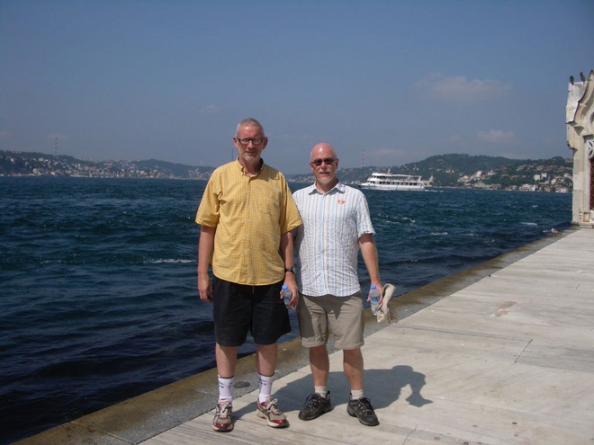
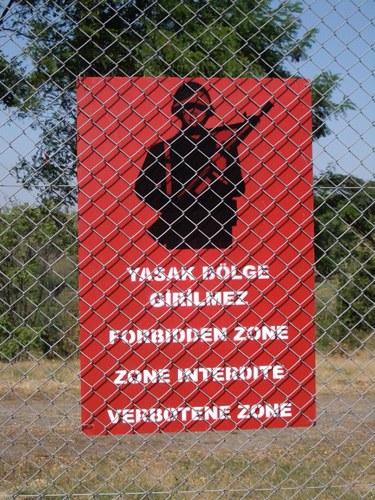
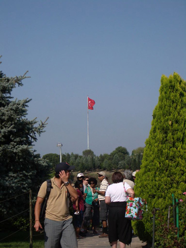
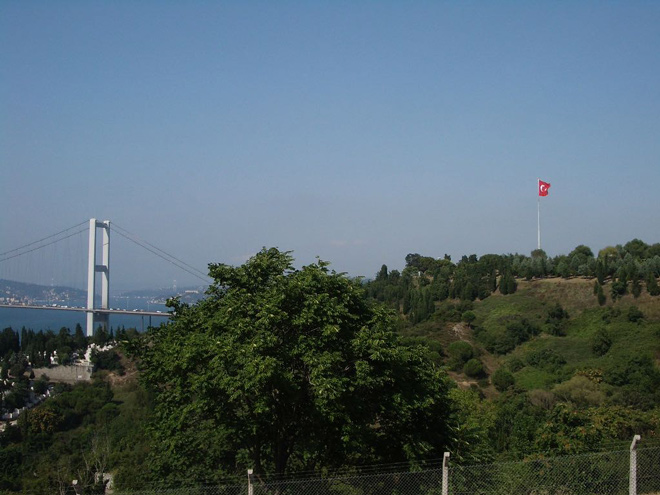
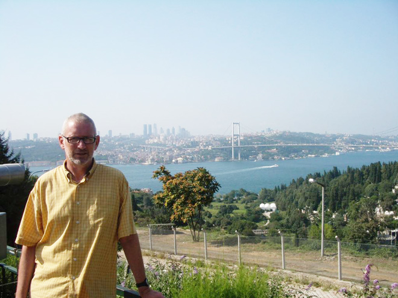
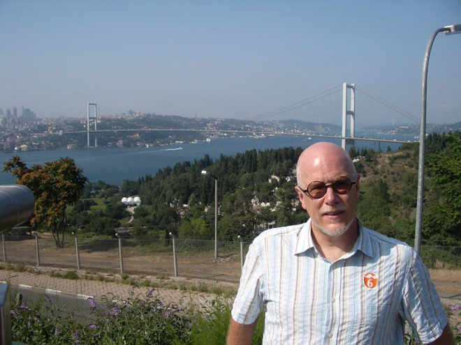
After the return coach trip back through rush-hour traffic, it was definitely time for a beer!
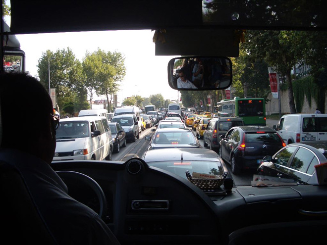
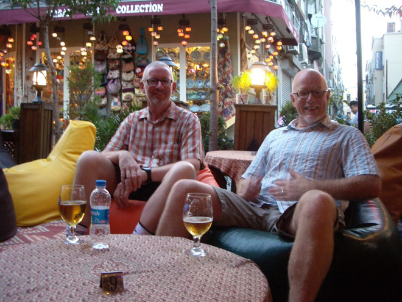